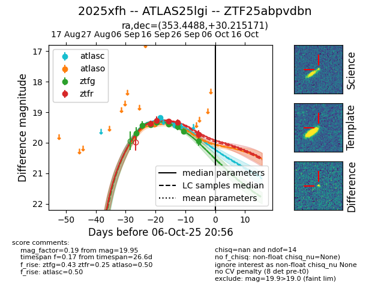
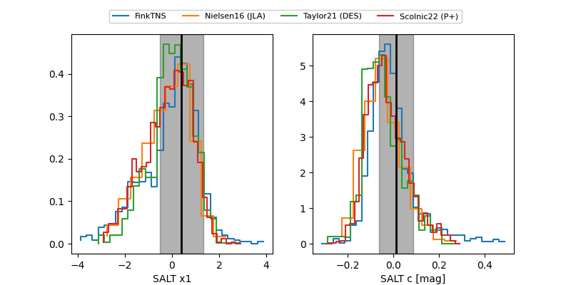

FINK: ZTF25abpvdbn
Lasair: ZTF25abpvdbn
ALeRCE: ZTF25abpvdbn
TNS: 2025xfh
YSE: 2025xfh
ZTF25abpvdbn (ztf,fink)
2025xfh (tns,yse)
ATLAS25lgi (atlas)
equatorial (ra, dec) = (353.4488,+30.21517)
galactic (l, b) = (103.6199,-29.72837)


last atlasc=19.43, atlaso=19.39, ztfg=19.95, ztfr=19.73
3 atlasc, 1 atlaso, 8 ztfg, 5 ztfr detections